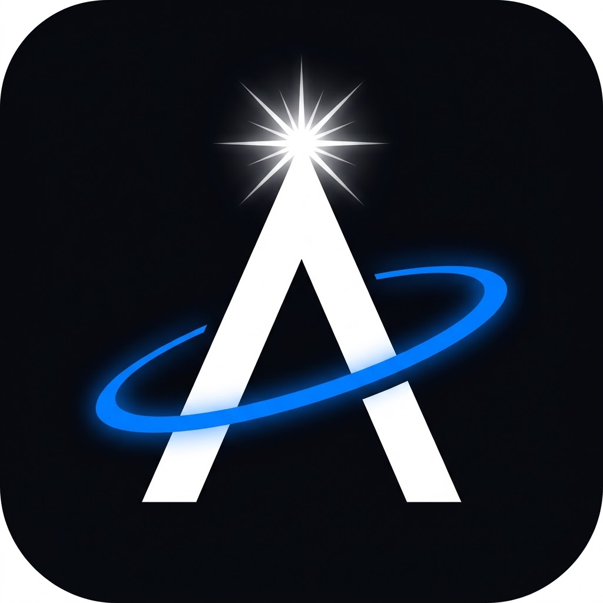

Переход от абстрактной темной сферы к знаковой неоновой букве «А» в фирменной гамме MAX Messenger (Electric Cyan → Cobalt → Ultraviolet Neon)

✦ Монограмма «А» (Асцендент) • Алмазная Сверхновая • Электрическая синяя орбита MAX (#007AFF)
Темная тема MAX (56px в списке чатов):
Светлая тема MAX (56px в списке чатов):
Микро-размер (32px в ленте диалога):
Смысл: Восходящий знак (Ascendant) — острие пирамиды, устремленное вверх. В вершине — вспышка сверхновой / Полярная звезда. Перекладина — светящаяся орбита планеты.
Смысл: Непрерывный замкнутый цикл судьбы и планетарных транзитов. Единая бесшовная световая линия формирует букву «А» с мягкими футуристичными изгибами.
Смысл: Астрономические тригоны и секстили натальной карты. Три главные звезды-пульсара в углах буквы «А», соединенные лазерными неоновыми лучами.
Смысл: Мощный ИИ-кристалл и линза звездных координат. Фасетчатая 3D буква «А» из темного оптического стекла, сквозь грани которого пробивается неоновое свечение MAX.